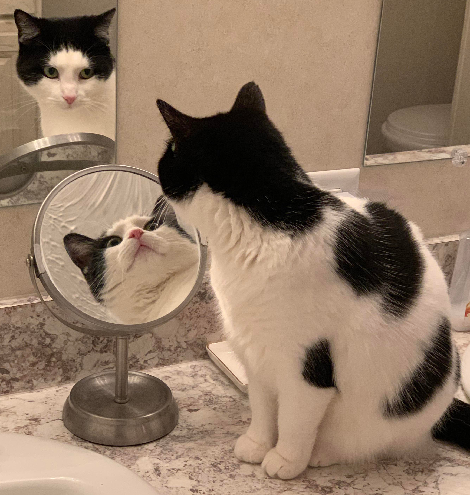
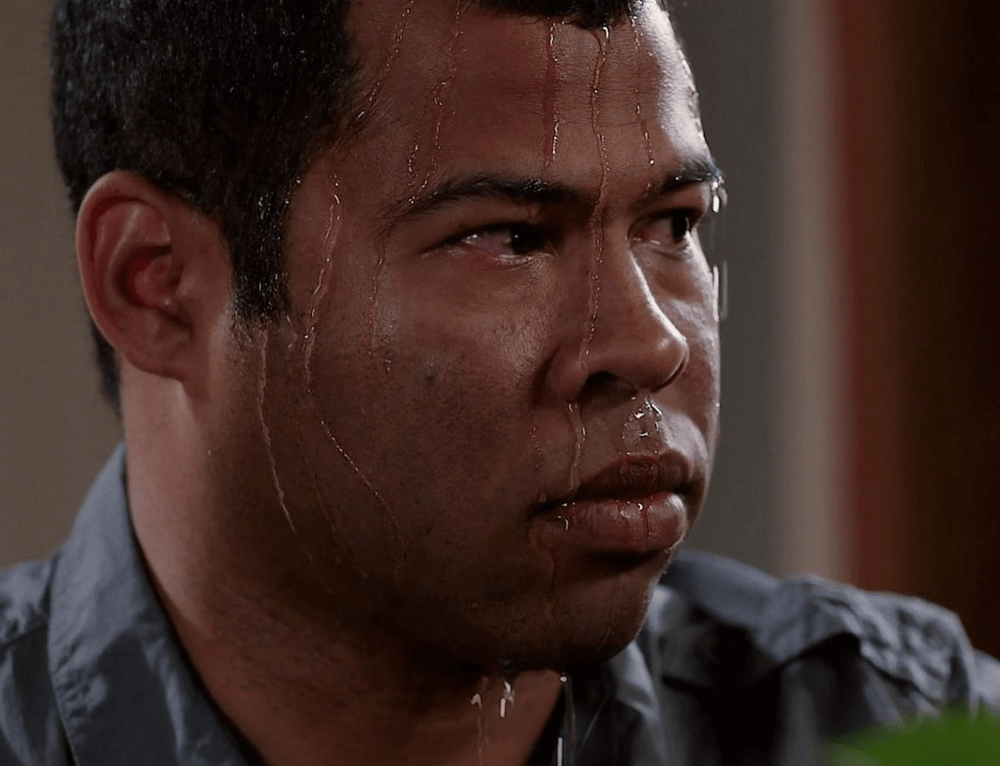
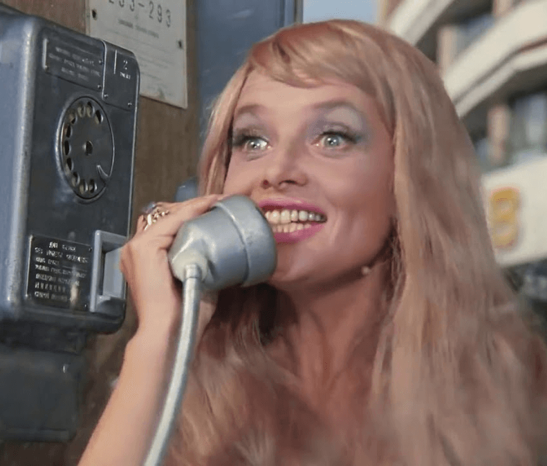
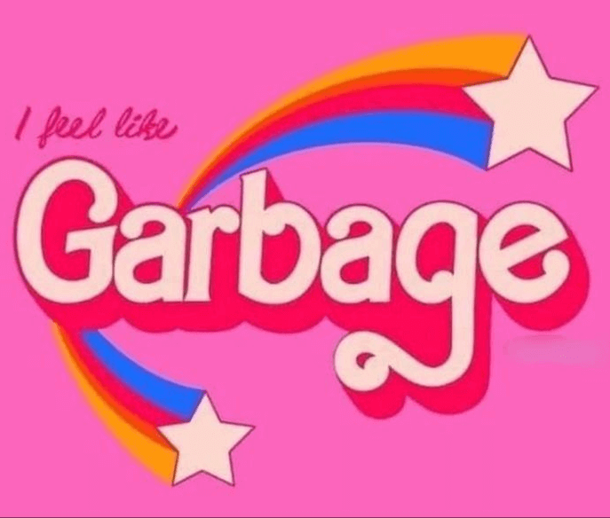
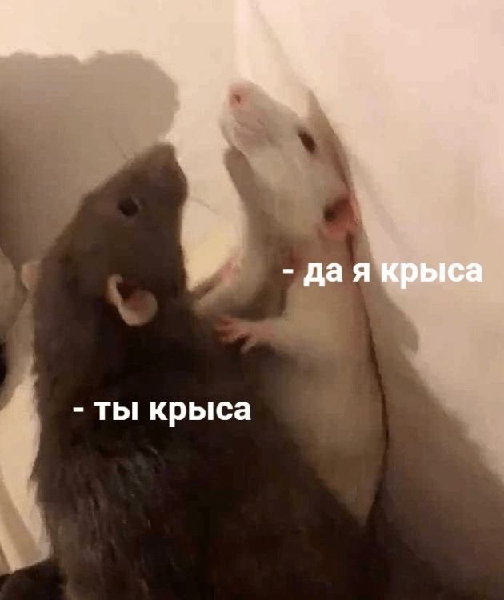
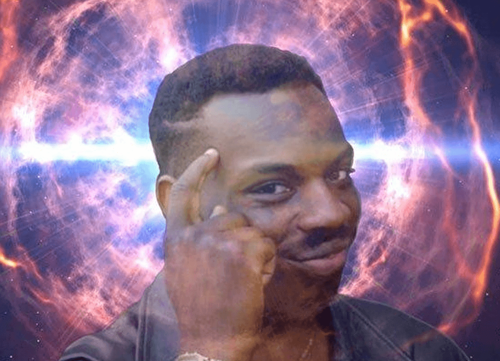

Фритрек и нулевой спринт: Подготовка к работе

Хто я?
Это было самое начало пути. На этом этапе важно было проникнуться основами и настроиться на учёбу. И, возможно, подумать, как новые знания могут повлиять на ваше будущее.
Пройдя несколько тестов по типу «Кто ты в айти» на разных платформах, я, с абсолютным нулём значий и дрожащими руками, нажала на кнопку «Оплатить курс». Потому что, определенно, пора было что-то менять в этой жизни.
1 спринт: Я — чистый лист

Бери и делай
На первых этапах мы работали со страхами и сомнениями, которые часто испытывают новички. Один из них — страх перед чистым листом. Это, конечно же, намного сложнее, чем боязнь куска бумаги. Часто за этим ощущением скрываются более глубокие вопросы: с чего начать? а вдруг будет слишком сложно? что, если я не справлюсь?
Как полухудожник-любитель, я уже имела дело со страхом чистого листа и знаю, что лучшее стредство борьбы со страхом - начни писать хоть что-нибудь, потом исправишь. Но всё равно было страшно. Очень.
1 спринт: А если не получится?

Не дать заднюю
Первый проект — позади! Но это всё ещё самое начало пути. Радость могла быстро померкнуть и смениться ожиданием провала. Или вы, наоборот, могли вдохновиться успехами и поверить в себя.
Добавилось немного уверенности в себе. Ради дополнительной мотивации, рассказала всем родственникам и друзьям, что начала обучение, чтобы сдаться было еще стыднее.
2 спринт: Погоня за идеалом

Я не плачу, это дощ
На этом этапе вы уже достаточно разбирались в основах вёрстки, чтобы понять, как много ещё впереди. Вы могли попытаться погнаться за идеалом и понять, что он недостижим. А, может, вы вовсе и не подвержены перфекционизму и вместо того, чтобы сделать идеально, старались просто сделать.
Первые слезы во время выполнения проектной работы и чувство, что я самая тупая, раз все сдают, а у меня не получается.
2 спринт: О тех, кто рядом

Спасибо тебе
Всё это время вы были не одиноки (хотя, возможно, иногда и чувствовали, что одни против целого мира). Вас окружали одногруппники, команда сопровождения и просто близкие люди, которым можно пожаловаться, если очередной макет просто так не поддавался. Осваивать что-то новое легче, когда рядом есть единомышленники, не правда ли?
Жаловаться на трудности и делиться успехами правда очень важно. Эту карточку я посвящаю своему прекрасному и поддерживающему мужчине.
3 спринт: Обходные стратегии

Не гноби себя
На этом курсе вы постоянно решали разные задачи. В какой-то момент вам могло показаться, что решения просто иссякли. Значит, пришло время посмотреть на задачу под другим углом.
Хорошо, что есть чат с вопросами от студентов, и ты можешь иногда, в моменты отчаяния, подсмотреть, что им ответили наставники на такую же проблему, как у тебя. Хотя я немного разочаровываюсь в себе, когда оказывается, что ответ лежал на поверхности.
3 спринт: Когда опускаются руки

Осознанность
Во время учёбы часто возникает чувство, когда не знаешь, за что хвататься. Вроде и проектную пора сдавать, и задачи хочется порешать, и в теории получше разобраться, и жизнь не забыть пожить. В такие моменты очень нужна концентрация. Вспомните, откуда вы её черпали.
Яндекс Практикум сообщил мне, что мой стиль мотивации — «Стабильность и ритм». Кажется, метод Pomodoro и правда идеально подходит для меня. Еще нужно постараться регулярно заниматься спортом, правильно питаться и соблюдать все остальные прелести взрослой жизни. Сил будет больше.
«Сейчас я здесь»
Живём живём
Сейчас вы уже очень много знаете о вёрстке. Но это только начало. Во-первых, впереди ещё много материала про «красотищу». Во-вторых, с окончанием курса учёба не заканчивается. Вёрстка — это целый мир. И этот мир постоянно меняется. Познать его полностью не получится, но это тот случай, когда важен сам процесс познания. Ведь часто путь — и есть результат.
Я чувствую, что я молодец. Даже если я по какой то причине не справлюсь с Java Script и не закончу всё обучение целиком, я хотя бы создала себе кучку нейронных связей в мозге и чуть чуть отодвинула старческую деменцию.